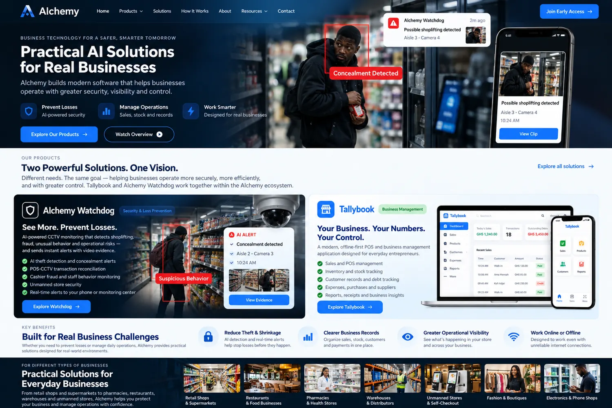

◈ RETAIL VISIBILITY
DEVELOPMENT PREVIEW
Alchemy Watchdog
A CCTV-assisted retail investigation system designed to bring camera observations, review workflows, and business context together.
Discover Watchdog ↗Meet Alchemy — a growing ecosystem of practical software for retail security, everyday sales, inventory, and business operations.
Investigation timeline
Review status · Pending
The Alchemy ecosystem
From the shop floor to the sales counter, our tools are being built to help owners understand what's happening and stay on top of daily operations.
A CCTV-assisted retail investigation system designed to bring camera observations, review workflows, and business context together.
Discover Watchdog ↗Mobile-first business software designed to organize sales, stock, customer balances, receipts, purchases, and everyday records.
Explore Tallybook ↗All dashboards shown here are fictional design illustrations, not live product screenshots or verified detection results.
Why we're building Alchemy
Good business technology should make information easier to find, not harder to understand.
Camera observations and time-based patterns can help direct attention to events that warrant human review.
A planned verified connection between transaction records and authorized video investigations.
Organize products, purchases, payments, customer balances, and local business activity.
Give operators a structured place to inspect relevant observations and supporting materials.
Tallybook is designed for supported local business workflows without continuous internet access.
Software foundations for viewing authorized operational summaries across registered store workspaces.
Our approach
Designed around the way real people manage shops — with understandable information and human review at the center.
Preserve supported business transactions or CCTV observations in the appropriate product workspace.
Find relevant records, identify items for attention, and examine supporting information.
Give business owners and authorized staff more context for informed decisions, not automatic accusations.
Built with your world in mind
Start with Ghanaian businesses. Build for a future where more African entrepreneurs can access useful, understandable technology.
The product vision
Alchemy brings together focused tools for two everyday questions: what is happening in my store? and what do my business records tell me?

AI-generated brand concept. Not a real application screenshot, accuracy proof, or released feature set.
Alchemy products are in development. Ask about previews, pilot opportunities, and launch updates.